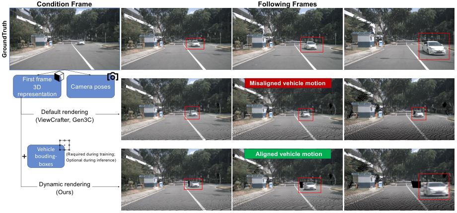
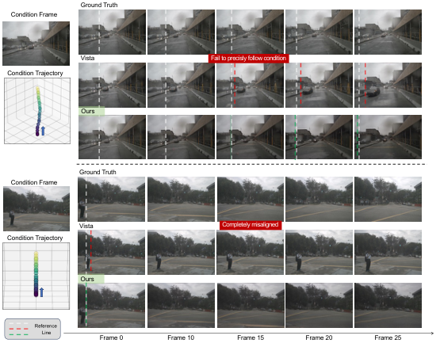
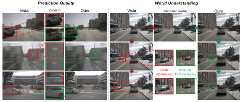
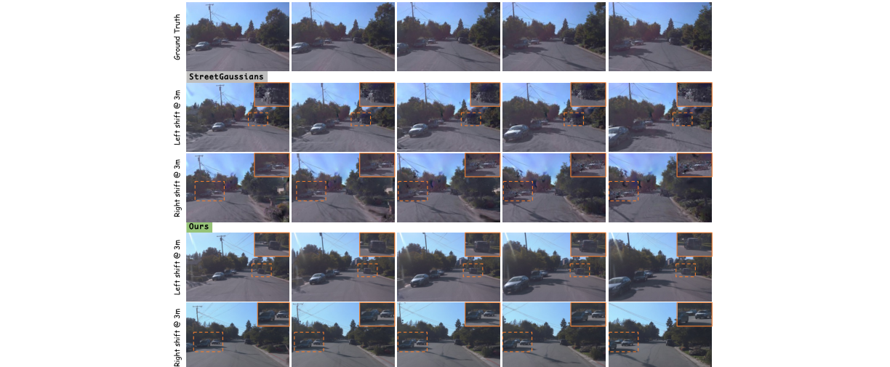
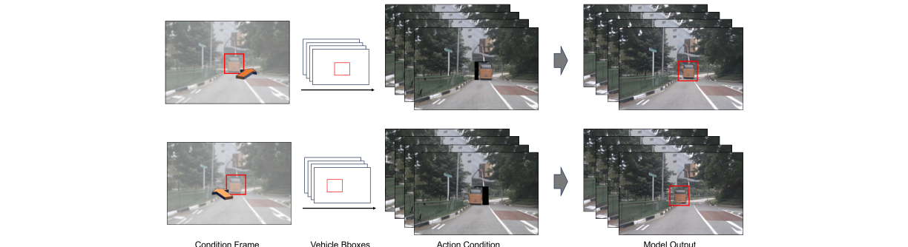
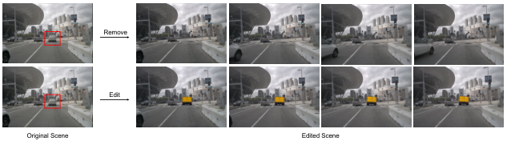

GeoDrive
简单摘要
这篇论文针对的是一个很关键、但经常被轻描淡写的问题：驾驶世界模型如果只把控制信号当作数值向量塞进生成器，模型虽然“知道你想往哪开”，却未必真的理解场景的 3D 结构。所以一旦目标轨迹偏离训练分布，或者出现遮挡、动态车辆交互，生成结果往往会出现几何错位、运动不连贯和控制不准的问题。
GeoDrive 的核心想法是把控制条件重新视觉化。作者不是直接把轨迹数值注入 backbone，而是先从输入帧重建 3D 场景，再沿着用户指定的自车轨迹渲染出一段几何一致的条件视频，让扩散模型在这个视觉先验上继续生成。这样做的意义在于：模型接收到的不再是抽象命令，而是“如果真沿这条轨迹运动，场景大致应该长什么样”的结构提示。
为了让条件更接近真实驾驶视频，作者还加入了动态编辑模块。因为如果只使用第一帧点云去渲染，背景虽然稳定，但场景里的车全都像被冻结了一样，和真实驾驶数据差距很大。GeoDrive 会利用 2D 边界框在训练时调整其他车辆的位置，生成带动态物体变化的渲染序列，从而缩小“静态几何渲染”和“真实动态视频”之间的域差距。


可以把 GeoDrive 理解成“先用 3D 几何把轨迹条件画出来，再让视频扩散模型把这份几何草图补成真实驾驶视频”。它的重点不是单纯提升画质，而是让动作控制和场景结构真正对齐。
核心创新
GeoDrive 的第一个创新点，是把“动作控制”从数值控制量重新变成几何可视条件。很多工作把轨迹、姿态或控制命令直接拼进特征里，但这类信号和图像生成空间并不天然对齐，容易导致控制弱、漂移大。GeoDrive 则先把目标轨迹变成一段视觉上可渲染的 3D 条件视频，再让扩散模型去跟随这个条件生成。
第二个创新点，是它把静态 3D 几何先验和动态编辑结合起来。仅有 3D 重建还不够，因为首帧点云天生是静态的；GeoDrive 进一步利用其他车辆的边界框，在训练阶段构造“背景稳定但车辆会动”的条件渲染。这一步非常关键，因为它让模型学到的不只是相机怎么移动，还包括场景里的动态交互应该怎么变化。
第三个创新点，是它在工程上采取了一个很实际的折中：不去重训整个大扩散模型，而是冻结 CogVideo 主干，只训练一个轻量条件编码器，把几何条件逐层注入 DiT。这样做一方面保留了大模型本身的画质能力，另一方面把 3D 几何和动作控制显式接进了生成链路。
技术细节
方法链路可以分成三步。第一步，作者从输入参考图像构建一个 3D 几何先验；第二步，沿用户指定的自车轨迹把这个 3D 场景投影成一段条件视频；第三步，再让视频扩散模型在这个条件之上做细化，输出既满足轨迹控制、又有真实感的视频。整个方法真正想解决的不是“如何从无到有生成驾驶视频”，而是“如何在生成过程中保住几何结构和动作可控性”。
在 3D 重建阶段，GeoDrive 采用 MonST3R 来同时预测每帧的 3D 点和相机位姿。对这篇论文来说，MonST3R 的价值不只是提供一个点云，而是提供一个可以沿任意目标轨迹继续投影的几何底座。作者还专门利用静态特征匹配来估计相机位姿，目的就是尽量减少动态目标对几何估计的干扰，让后续轨迹渲染更稳。
接下来，系统把首帧点云沿目标轨迹做投影渲染，得到一段几何一致的条件视频。但如果只做这一步，场景里的车都不会动，所以作者引入了动态编辑模块：当给定其他车辆的 2D 边界框序列时，模型会同步调整这些车在渲染中的位置，生成更接近真实驾驶动态的条件结果。这一步本质上是在补齐“几何上对，但动态上太死”的问题。
最后，作者把这些渲染结果编码成潜变量，通过轻量条件编码器注入冻结的 DiT 主干。这样做的好处是，扩散模型仍然负责补画质、补遮挡、补纹理，但生成过程已经被几何条件牢牢约束住，不再完全靠数值控制向量去“猜”相机和物体运动。
$$ \{O_t\}_{t=0}^T, \{D_t\}_{t=0}^T = \mathrm{MonST3R}\bigl(\{I_t\}_{t=0}^T\bigr), $$
这条公式给出了 MonST3R 的输出：它会从输入帧序列里同时预测每个像素对应的 3D 坐标和置信度。对 GeoDrive 来说，这一步的意义在于先把 2D 图像转成一个可投影、可跟随相机轨迹运动的几何表示，而不是直接在像素空间里做“黑盒预测”。
$$ \mathcal{P}_t = \bigl\{(\mathbf{O}_t^{i,j},\,I_t^{i,j}) \mid \mathbf{D}_t^{i,j}>\tau\bigr\}. $$
这一项是在置信度阈值筛选后构造首帧点云。换句话说，作者并不是把所有像素都无脑抬到三维，而是先保留更可信的区域，再把它们作为后续渲染的几何骨架。这样可以减少错误匹配对整条生成链的放大效应。
$$ \hat{C}_t = \arg\min_{C_t}\sum_{(i,j)\in\mathbf{F}^{\mathrm{static}}} \bigl\|\pi(C_t\,\mathbf{O}_t^{i,j})-\mathbf{p}_t^{i,j}\bigr\|_2^2, $$
这个位姿估计式说明作者只用静态区域去拟合相机轨迹。原因很简单：如果把正在运动的车也拿来约束位姿，系统会把物体运动误当成相机运动，后面沿轨迹投影时就容易整体漂掉。
$$ \delta_{\phi}(z_t, t, C)_i = \delta_{\phi}(z_t, t, C)_i + \mathcal{W} \left( \gamma_{\phi}^{enc}([z_t, z_R], t)_{i // \frac{M}{2}} \right), $$
这条式子描述的是条件编码器如何把渲染视频特征注入冻结的 DiT。它不是简单把条件拼在输入端，而是把条件编码结果分层加到 backbone 的中间特征上。这样一来，扩散模型保留原有的生成能力，但每一层都能感知到“当前几何条件长什么样”。



把这些模块串起来看，GeoDrive 真正的设计重点是：先把轨迹条件变成几何一致的可视输入，再用扩散模型做高保真补全。这样就把“控制是否准确”和“画面是否真实”分拆到不同模块，各自处理自己最擅长的问题。
实验结论
实验部分主要验证三件事：GeoDrive 的动作跟随是否更准、画面质量是否更好、以及这种能力是否能泛化到新视角和交互式场景编辑。作者主要在 nuScenes 上与 Vista、Terra 等更接近的基线比较，同时也把结果放到更广的一批驾驶世界模型上做 FID / FVD 对照。
从结果看，GeoDrive 在动作保真度和视觉质量上都明显优于基线，而且训练数据量远小于 Vista 一类方法。论文里最有说服力的一点，不只是数值更好，而是生成结果更能稳定沿指定轨迹前进，不会轻易出现控制漂移或几何结构散掉的问题。
更进一步，作者还在 Waymo 上做了零样本新视角合成，并通过场景编辑和车辆轨迹操纵展示方法的可扩展性。消融实验则说明两件事都很关键：没有动态编辑，条件视频和真实驾驶动态之间的差距会变大；没有双分支条件注入，模型虽然还能生成视频，但轨迹跟随和画质都会明显下降。


- 方法在核心指标上的优势与结构设计和训练目标直接相关；
- 消融实验表明，拿掉关键模块后性能与结果质量都有明显回落；
- 论文不仅比较数值，也关注可视化质量、稳定性和泛化能力等更贴近真实使用的信号。
理解评价
从整篇论文看，GeoDrive 最有价值的地方，不是单纯把世界模型接上一个 3D 重建模块，而是它把“动作控制为什么会失真”这个问题解释清楚了：很多方法控制不准，不是因为生成器不够大，而是因为控制信号没有和视觉生成空间真正对齐。GeoDrive 用几何渲染作为中间桥梁，把轨迹条件变成模型更容易理解的视觉先验，这是它最核心的贡献。
它的主要局限也很明显。首先，整条链路高度依赖 MonST3R 的深度与位姿估计质量，如果前端几何先验不准，后面的渲染条件也会被一起带偏；其次，方法目前主要依赖图像和轨迹作为输入，对更复杂的高层语义控制仍然不够强；另外，动态编辑依赖额外的 2D 边界框条件，这意味着它在完全自由场景生成上还不是一个全自动方案。
如果继续往前推进，一个自然的方向是把文本条件、VLA 语义理解和更强的多主体交互建模一起接进来，让 GeoDrive 不只会“按轨迹生成”，还能够真正理解“为什么这个动作在当前交通语境下合理”。如果这一步做成，它就更像一个可交互、可推演、可服务规划的世界模型，而不只是一个更强的视频生成器。
以下相关论文可以作为进一步追踪的入口：